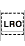

Unicode Standard Annex #9
Unicode Bidirectional Algorithm
| Version | Unicode 6.2.0 |
| Editors | Mark Davis (markdavis@google.com) |
| Date | 2012-09-10 |
| This Version | http://www.unicode.org/reports/tr9/tr9-27.html |
| Previous Version | http://www.unicode.org/reports/tr9/tr9-25.html |
| Latest Version | http://www.unicode.org/reports/tr9/ |
| Latest Proposed Update | http://www.unicode.org/reports/tr9/proposed.html |
| Revision | 27 |
Summary
This annex describes specifications for the positioning of characters in text containing characters flowing from right to left, such as Arabic or Hebrew.
Status
This document has been reviewed by Unicode members and other interested parties, and has been approved for publication by the Unicode Consortium. This is a stable document and may be used as reference material or cited as a normative reference by other specifications.
A Unicode Standard Annex (UAX) forms an integral part of the Unicode Standard, but is published online as a separate document. The Unicode Standard may require conformance to normative content in a Unicode Standard Annex, if so specified in the Conformance chapter of that version of the Unicode Standard. The version number of a UAX document corresponds to the version of the Unicode Standard of which it forms a part.
Please submit corrigenda and other comments with the online reporting form [Feedback]. Related information that is useful in understanding this annex is found in Unicode Standard Annex #41, “Common References for Unicode Standard Annexes.” For the latest version of the Unicode Standard, see [Unicode]. For a list of current Unicode Technical Reports, see [Reports]. For more information about versions of the Unicode Standard, see [Versions]. For any errata which may apply to this annex, see [Errata].
Contents
- 1 Introduction
- 2 Directional Formatting Codes
- 3 Basic Display Algorithm
- 3.1 Definitions: BD1, BD2, BD3, BD4, BD5, BD6, BD7
- 3.2 Bidirectional Character Types
- 3.3 Resolving Embedding Levels
- 3.4 Reordering Resolved Levels: L1, L2, L3, L4
- 3.5 Shaping
- 4 Bidirectional Conformance
- 4.1 Boundary Neutrals
- 4.2 Explicit Formatting Codes
- 4.3 Higher-Level Protocols: HL1, HL2, HL3, HL4, HL5, HL6
- 4.4 Bidi Conformance Testing
- 5 Implementation Notes
- 5.1 Reference Code
- 5.2 Retaining Format Codes
- 5.3 Joiners
- 5.4 Vertical Text
- 5.5 Usage
- 5.6 Separating Punctuation Marks
- 5.7 Migrating from 2.0 to 3.0
- 5.8 Conversion_to_Plain_Text
- 6 Mirroring
- Acknowledgments
- References
- Modifications
1 Introduction
The Unicode Standard prescribes a memory representation order known as logical order. When text is presented in horizontal lines, most scripts display characters from left to right. However, there are several scripts (such as Arabic or Hebrew) where the natural ordering of horizontal text in display is from right to left. If all of the text has a uniform horizontal direction, then the ordering of the display text is unambiguous.
However, because these right-to-left scripts use digits that are written from left to right, the text is actually bidirectional: a mixture of right-to-left and left-to-right text. In addition to digits, embedded words from English and other scripts are also written from left to right, also producing bidirectional text. Without a clear specification, ambiguities can arise in determining the ordering of the displayed characters when the horizontal direction of the text is not uniform.
This annex describes the algorithm used to determine the directionality for bidirectional Unicode text. The algorithm extends the implicit model currently employed by a number of existing implementations and adds explicit format codes for special circumstances. In most cases, there is no need to include additional information with the text to obtain correct display ordering.
However, in the case of bidirectional text, there are circumstances where an implicit bidirectional ordering is not sufficient to produce comprehensible text. To deal with these cases, a minimal set of directional formatting codes is defined to control the ordering of characters when rendered. This allows exact control of the display ordering for legible interchange and ensures that plain text used for simple items like filenames or labels can always be correctly ordered for display.
The directional formatting codes are used only to influence the display ordering of text. In all other respects they should be ignored—they have no effect on the comparison of text or on word breaks, parsing, or numeric analysis.
When working with bidirectional text, the characters are still interpreted in logical order—only the display is affected. The display ordering of bidirectional text depends on the directional properties of the characters in the text. Note that there are important security issues connected with bidirectional text: for more information, see [UTR36].
2 Directional Formatting Codes
Two types of explicit codes are used to modify the standard implicit Unicode Bidirectional Algorithm (UBA). In addition, there are implicit ordering codes, the right-to-left and left-to-right marks. All of these codes are limited to the current paragraph; thus their effects are terminated by a paragraph separator. The directional types left-to-right and right-to-left are called strong types, and characters of those types are called strong directional characters. The directional types associated with numbers are called weak types, and characters of those types are called weak directional characters.
These controls all have the property Bidi_Control, and are divided into two groups:
Implicit Bidi Controls
U+200E..U+200F LEFT-TO-RIGHT MARK..RIGHT-TO-LEFT MARK
Explicit Bidi Controls
U+202A..U+202E LEFT-TO-RIGHT EMBEDDING..RIGHT-TO-LEFT OVERRIDE
On web pages, the explicit bidi controls should be replaced by using the dir attribute with the values dir="ltr" or dir="rtl". For more information, see [UTR20].
Although the term embedding is used for some explicit codes, the text within the scope of the codes is not independent of the surrounding text. Characters within an embedding can affect the ordering of characters outside, and vice versa. The algorithm is designed so that the use of explicit codes can be equivalently represented by out-of-line information, such as stylesheet information. However, any alternative representation will be defined by reference to the behavior of the explicit codes in this algorithm.
2.1 Explicit Directional Embedding
The following codes signal that a piece of text is to be treated as embedded. For example, an English quotation in the middle of an Arabic sentence could be marked as being embedded left-to-right text. If there were a Hebrew phrase in the middle of the English quotation, the that phrase could be marked as being embedded right-to-left. These codes allow for nested embeddings.
| Abbr. | Code | Chart | Name | Description |
|---|---|---|---|---|
| LRE | U+202A | LEFT-TO-RIGHT EMBEDDING | Treat the following text as embedded left-to-right. | |
| RLE | U+202B | RIGHT-TO-LEFT EMBEDDING | Treat the following text as embedded right-to-left. |
The effect of right-left line direction, for example, can be accomplished by embedding the text with RLE...PDF.
2.2 Explicit Directional Overrides
The following codes allow the bidirectional character types to be overridden when required for special cases, such as for part numbers. These codes allow for nested directional overrides. These characters are to be avoided wherever possible, because of security concerns. For more information, see [UTR36].
| Abbr. | Code | Chart | Name | Description |
|---|---|---|---|---|
| LRO | U+202D |  | LEFT-TO-RIGHT OVERRIDE | Force following characters to be treated as strong left-to-right characters. |
| RLO | U+202E | RIGHT-TO-LEFT OVERRIDE | Force following characters to be treated as strong right-to-left characters. |
The precise meaning of these codes will be made clear in the discussion of the algorithm. The right-to-left override, for example, can be used to force a part number made of mixed English, digits and Hebrew letters to be written from right to left.
2.3 Terminating Explicit Directional Code
The following code terminates the effects of the last explicit code (either embedding or override) and restores the bidirectional state to what it was before that code was encountered.
| Abbr. | Code | Chart | Name | Description |
|---|---|---|---|---|
| U+202C | POP DIRECTIONAL FORMATTING | Restore the bidirectional state to what it was before the last LRE, RLE, RLO, or LRO. |
The precise meaning of this code will be made clear in the discussion of the algorithm.
2.4 Implicit Directional Marks
These characters are very light-weight codes. They act exactly like right-to-left or left-to-right characters, except that they do not display or have any other semantic effect. Their use is more convenient than using explicit embeddings or overrides because their scope is much more local.
| Abbr. | Code | Chart | Name | Description |
|---|---|---|---|---|
| LRM | U+200E | LEFT-TO-RIGHT MARK | Left-to-right zero-width character | |
| RLM | U+200F | RIGHT-TO-LEFT MARK | Right-to-left zero-width character |
There is no special mention of the implicit directional marks in the following algorithm. That is because their effect on bidirectional ordering is exactly the same as a corresponding strong directional character; the only difference is that they do not appear in the display.
3 Basic Display Algorithm
The Unicode Bidirectional Algorithm (UBA) takes a stream of text as input and proceeds in four main phases:
- Separation into paragraphs. The rest of the algorithm is applied separately to the text within each paragraph.
- Initialization. A list of directional character types is initialized, with one entry for each character in the original text. The value of each entry is the Bidi_Class property of the respective character. After this point, the original characters are no longer referenced until the reordering phase. A list of embedding levels, with one level per character, is then initialized.
- Resolution of the embedding levels. A series of rules are applied to the lists of embedding levels and directional character types. Each rule is based on the current values of those lists, and can modify those values. Each rule is applied to each of the values in sequence before continuing to the next rule. The result of this phase is a modified list of embedding levels; the list of directional character types is no longer needed.
- Reordering. The text within each paragraph is reordered for display: first, the text in the paragraph is broken into lines, then the resolved embedding levels are used to reorder the text of each line for display.
The algorithm reorders text only within a paragraph; characters in one paragraph have no effect on characters in a different paragraph. Paragraphs are divided by the Paragraph Separator or appropriate Newline Function (for guidelines on the handling of CR, LF, and CRLF, see Section 4.4, Directionality, and Section 5.8, Newline Guidelines of [Unicode]). Paragraphs may also be determined by higher-level protocols: for example, the text in two different cells of a table will be in different paragraphs.
Combining characters always attach to the preceding base character in the memory representation. Even after reordering for display and performing character shaping, the glyph representing a combining character will attach to the glyph representing its base character in memory. Depending on the line orientation and the placement direction of base letterform glyphs, it may, for example, attach to the glyph on the left, or on the right, or above.
This annex uses the numbering conventions for normative definitions and rules in Table 1.
Table 1. Normative Definitions and Rules
| Numbering | Section |
|---|---|
| BDn | Definitions |
| Pn | Paragraph levels |
| Xn | Explicit levels and directions |
| Wn | Weak types |
| Nn | Neutral types |
| In | Implicit levels |
| Ln | Resolved levels |
3.1 Definitions
BD1. The bidirectional characters types are values assigned to each Unicode character, including unassigned characters. The formal property name in the Unicode Character Database [UCD] is Bidi_Class.
BD2. Embedding levels are numbers that indicate how deeply the text is nested, and the default direction of text on that level. The minimum embedding level of text is zero, and the maximum explicit depth is level 61.
Embedding levels are explicitly set by both override format codes and by embedding format codes; higher numbers mean the text is more deeply nested. The reason for having a limitation is to provide a precise stack limit for implementations to guarantee the same results. Sixty-one levels is far more than sufficient for ordering, even with mechanically generated formatting; the display becomes rather muddied with more than a small number of embeddings.
BD3. The default direction of the current embedding level (for the character in question) is called the embedding direction. It is L if the embedding level is even, and R if the embedding level is odd.
For example, in a particular piece of text, Level 0 is plain English text. Level 1 is plain Arabic text, possibly embedded within English level 0 text. Level 2 is English text, possibly embedded within Arabic level 1 text, and so on. Unless their direction is overridden, English text and numbers will always be an even level; Arabic text (excluding numbers) will always be an odd level. The exact meaning of the embedding level will become clear when the reordering algorithm is discussed, but the following provides an example of how the algorithm works.
BD4. The paragraph embedding level is the embedding level that determines the default bidirectional orientation of the text in that paragraph.
BD5. The direction of the paragraph embedding level is called the paragraph direction.
- In some contexts the paragraph direction is also known as the base direction.
BD6. The directional override status determines whether the bidirectional type of characters is to be reset. The override status is set by using explicit directional controls. This status has three states, as shown in Table 2.
Table 2. Directional Override Status
| Status | Interpretation |
|---|---|
| Neutral | No override is currently active |
| Right-to-left | Characters are to be reset to R |
| Left-to-right | Characters are to be reset to L |
BD7. A level run is a maximal substring of characters that have the same embedding level. It is maximal in that no character immediately before or after the substring has the same level (a level run is also known as a directional run).
Example
In this and the following examples, case is used to indicate different implicit character types for those unfamiliar with right-to-left letters. Uppercase letters stand for right-to-left characters (such as Arabic or Hebrew), and lowercase letters stand for left-to-right characters (such as English or Russian).
Memory: car is THE CAR in arabic Character types: LLL-LL-RRR-RRR-LL-LLLLLL Resolved levels: 000000011111110000000000
Notice that the neutral character (space) between THE and CAR gets the level of the surrounding characters. The level of the neutral characters can also be changed by inserting appropriate directional marks around neutral characters. These marks have no other effects.
Table 3 lists additional abbreviations used in the examples and internal character types used in the algorithm.
Table 3. Abbreviations for Examples and Internal Types
| Symbol | Description |
|---|---|
| N | Neutral or Separator (B, S, WS, ON) |
| e | The text ordering type (L or R) that matches the embedding level direction (even or odd) |
| sor | The text ordering type (L or R) assigned to the position before a level run. |
| eor | The text ordering type (L or R) assigned to the position after a level run. |
3.2 Bidirectional Character Types
The normative bidirectional character types for each character are specified in the Unicode Character Database [UCD] and are summarized in Table 4. This is a summary only: there are exceptions to the general scope. For example, certain characters such as U+0CBF KANNADA VOWEL SIGN I are given Type L (instead of NSM) to preserve canonical equivalence.
- The term European digits is used to refer to decimal forms common in Europe and elsewhere, and Arabic-Indic digits to refer to the native Arabic forms. (See Section 8.2, Arabic of [Unicode], for more details on naming digits.)
- Unassigned characters are given strong types in the algorithm. This is an explicit exception to the general Unicode conformance requirements with respect to unassigned characters. As characters become assigned in the future, these bidirectional types may change. For assignments to character types, see DerivedBidiClass.txt [DerivedBIDI] in the [UCD].
- Private-use characters can be assigned different values by a conformant implementation.
- For the purpose of the Bidirectional Algorithm, inline objects (such as graphics) are treated as if they are an U+FFFC OBJECT REPLACEMENT CHARACTER.
- As of Unicode 4.0, the Bidirectional Character Types of a few Indic characters were altered
so that the Bidirectional Algorithm preserves canonical
equivalence. That is, two canonically equivalent strings will result in equivalent ordering
after applying the algorithm. This invariant will be maintained in the future.
Note: The Bidirectional Algorithm does not preserve compatibility equivalence.
Table 4. Bidirectional Character Types
|
3.3 Resolving Embedding Levels
The body of the Bidirectional Algorithm uses character types and explicit codes to produce a list of resolved levels. This resolution process consists of five steps: (1) determining the paragraph level; (2) determining explicit embedding levels and directions; (3) resolving weak types; (4) resolving neutral types; and (5) resolving implicit embedding levels.
3.3.1 The Paragraph Level
P1. Split the text into separate paragraphs. A paragraph separator is kept with the previous paragraph. Within each paragraph, apply all the other rules of this algorithm.
P2. In each paragraph, find the first character of type L, AL, or R.
Because paragraph separators delimit text in this algorithm, this will generally be the first strong character after a paragraph separator or at the very beginning of the text. Note that the characters of type LRE, LRO, RLE, or RLO are ignored in this rule. This is because typically they are used to indicate that the embedded text is the opposite direction than the paragraph level.
P3. If a character is found in P2 and it is of type AL or R, then set the paragraph embedding level to one; otherwise, set it to zero.
Whenever a higher-level protocol specifies the paragraph level, rules P2 and P3 may be overridden: see HL1.
3.3.2 Explicit Levels and Directions
All explicit embedding levels are determined from the embedding and override codes, by applying the explicit level rules X1 through X9. These rules are applied as part of the same logical pass over the input. As each character is processed, the current embedding level and the directional override status are tracked, being adjusted or kept the same depending on the type of that character. In turn, the current embedding level and the directional override status affect the assignment of the explicit embedding level for each character as defined by rules X1 through X9.
Explicit Embeddings
X1. Begin by setting the current embedding level to the paragraph embedding level. Set the directional override status to neutral. Process each character iteratively, applying rules X2 through X9. Only embedding levels from 0 to 61 are valid in this phase.
In the resolution of levels in rules I1 and I2, the maximum embedding level of 62 can be reached.
X2. With each RLE, compute the least greater odd embedding level.
a. If this new level would be valid, then this embedding code is valid. Remember (push) the current embedding level and override status. Reset the current level to this new level, and reset the override status to neutral.
b. If the new level would not be valid, then this code is invalid. Do not change the current level or override status.
For example, level 0 → 1; levels 1, 2 → 3; levels 3, 4 → 5; ...59, 60 → 61; above 60, no change (do not change levels with RLE if the new level would be invalid).
X3. With each LRE, compute the least greater even embedding level.
a. If this new level would be valid, then this embedding code is valid. Remember (push) the current embedding level and override status. Reset the current level to this new level, and reset the override status to neutral.
b. If the new level would not be valid, then this code is invalid. Do not change the current level or override status.
For example, levels 0, 1 → 2; levels 2, 3 → 4; levels 4, 5 → 6; ...58, 59 → 60; above 59, no change (do not change levels with LRE if the new level would be invalid).
Explicit Overrides
An explicit directional override sets the embedding level in the same way the explicit embedding codes do, but also changes the directional character type of affected characters to the override direction.
X4. With each RLO, compute the least greater odd embedding level.
a. If this new level would be valid, then this embedding code is valid. Remember (push) the current embedding level and override status. Reset the current level to this new level, and reset the override status to right-to-left.
b. If the new level would not be valid, then this code is invalid. Do not change the current level or override status.
X5. With each LRO, compute the least greater even embedding level.
a. If this new level would be valid, then this embedding code is valid. Remember (push) the current embedding level and override status. Reset the current level to this new level, and reset the override status to left-to-right.
b. If the new level would not be valid, then this code is invalid. Do not change the current level or override status.
X6. For all types besides BN, RLE, LRE, RLO, LRO, and PDF:
a. Set the level of the current character to the current embedding level.
b. Whenever the directional override status is not neutral, reset the current character type according to the directional override status.
If the directional override status is neutral, then characters retain their normal types: Arabic characters stay AL, Latin characters stay L, neutrals stay N, and so on. If the directional override status is R, then characters become R. If the directional override status is L, then characters become L. The current embedding level is not changed by this rule.
Terminating Embeddings and Overrides
There is a single code to terminate the scope of the current explicit code, whether an embedding or a directional override. All codes and pushed states are completely popped at the end of paragraphs.
X7. With each PDF, determine the matching embedding or override code. If there was a valid matching code, restore (pop) the last remembered (pushed) embedding level and directional override.
X8. All explicit directional embeddings and overrides are completely terminated at the end of each paragraph. Paragraph separators are not included in the embedding.
X9. Remove all RLE, LRE, RLO, LRO, PDF, and BN codes.
Note that an implementation does not have to actually remove the codes; it just has to behave as though the codes were not present for the remainder of the algorithm. Conformance does not require any particular placement of these codes as long as all other characters are ordered correctly.
See Section 5, Implementation Notes, for information on implementing the algorithm without removing the formatting codes.
- The zero width joiner and non-joiner affect the shaping of the adjacent characters—those that are adjacent in the original backing-store order, even though those characters may end up being rearranged to be non-adjacent by the Bidirectional Algorithm. For more information, see Section 5.3, Joiners.
X10. The remaining rules are applied to each run of characters at the same level. For each run, determine the start-of-level-run (sor) and end-of-level-run (eor) type, either L or R. This depends on the higher of the two levels on either side of the boundary (at the start or end of the paragraph, the level of the “other” run is the base embedding level). If the higher level is odd, the type is R; otherwise, it is L.
For example:
Levels: 0 0 0 1 1 1 2 Runs: <--- 1 ---> <--- 2 ---> <3>
Run 1 is at level 0, sor is L, eor is R.
Run 2 is at level 1, sor is R, eor is L.
Run 3 is at level 2, sor is L, eor is L.
For two adjacent runs, the eor of the first run is the same as the sor of the second.
3.3.3 Resolving Weak Types
Weak types are now resolved one level run at a time. At level run boundaries where the type of the character on the other side of the boundary is required, the type assigned to sor or eor is used.
Nonspacing marks are now resolved based on the previous characters.
W1. Examine each nonspacing mark (NSM) in the level run, and change the type of the NSM to the type of the previous character. If the NSM is at the start of the level run, it will get the type of sor.
Assume in this example that sor is R:
AL NSM NSM → AL AL AL
sor NSM → sor R
The text is next parsed for numbers. This pass will change the directional types European Number Separator, European Number Terminator, and Common Number Separator to be European Number text, Arabic Number text, or Other Neutral text. The text to be scanned may have already had its type altered by directional overrides. If so, then it will not parse as numeric.
W2. Search backward from each instance of a European number until the first strong type (R, L, AL, or sor) is found. If an AL is found, change the type of the European number to Arabic number.
AL EN → AL AN AL N EN → AL N AN sor N EN → sor N EN L N EN → L N EN R N EN → R N EN
W3. Change all ALs to R.
W4. A single European separator between two European numbers changes to a European number. A single common separator between two numbers of the same type changes to that type.
EN ES EN → EN EN EN EN CS EN → EN EN EN AN CS AN → AN AN AN
W5. A sequence of European terminators adjacent to European numbers changes to all European numbers.
ET ET EN → EN EN EN EN ET ET → EN EN EN AN ET EN → AN EN EN
W6. Otherwise, separators and terminators change to Other Neutral.
AN ET → AN ON L ES EN → L ON EN EN CS AN → EN ON AN ET AN → ON AN
W7. Search backward from each instance of a European number until the first strong type (R, L, or sor) is found. If an L is found, then change the type of the European number to L.
L N EN => L N L R N EN => R N EN
3.3.4 Resolving Neutral Types
Neutral types are now resolved one level run at a time. At level run boundaries where the type of the character on the other side of the boundary is required, the type assigned to sor or eor is used.
The next phase resolves the direction of the neutrals. The results of this phase are that all neutrals become either R or L. Generally, neutrals take on the direction of the surrounding text. In case of a conflict, they take on the embedding direction.
N1. A sequence of neutrals takes the direction of the surrounding strong text if the text on both sides has the same direction. European and Arabic numbers act as if they were R in terms of their influence on neutrals. Start-of-level-run (sor) and end-of-level-run (eor) are used at level run boundaries.
L N L → L L L R N R → R R R R N AN → R R AN R N EN → R R EN AN N R → AN R R AN N AN → AN R AN AN N EN → AN R EN EN N R → EN R R EN N AN → EN R AN EN N EN → EN R EN
N2. Any remaining neutrals take the embedding direction.
N → e
The embedding direction for the given neutral character is derived from its embedding level: L if the character is set to an even level, and R if the level is odd. (See BD3.)
Assume in the following example that eor is L and sor is R. Then an application of N1 and N2 yields the following:
L N eor → L L eor R N eor → R e eor sor N L → sor e L sor N R → sor R R
Examples. A list of numbers separated by neutrals and embedded in a directional run will come out in the run’s order.
Storage: he said "THE VALUES ARE 123, 456, 789, OK". Display: he said "KO ,789 ,456 ,123 ERA SEULAV EHT".
In this case, both the comma and the space between the numbers take on the direction of the surrounding text (uppercase = right-to-left), ignoring the numbers. The commas are not considered part of the number because they are not surrounded on both sides by digits (see Section 3.3.3, Resolving Weak Types). However, if there is a preceding left-to-right sequence, then European numbers will adopt that direction:
Storage: IT IS A bmw 500, OK. Display: .KO ,bmw 500 A SI TI
3.3.5 Resolving Implicit Levels
In the final phase, the embedding level of text may be increased, based on the resolved character type. Right-to-left text will always end up with an odd level, and left-to-right and numeric text will always end up with an even level. In addition, numeric text will always end up with a higher level than the paragraph level. (Note that it is possible for text to end up at levels higher than 61 as a result of this process.) This results in the following rules:
I1. For all characters with an even (left-to-right) embedding direction, those of type R go up one level and those of type AN or EN go up two levels.
I2. For all characters with an odd (right-to-left) embedding direction, those of type L, EN or AN go up one level.
Table 5 summarizes the results of the implicit algorithm.
Table 5. Resolving Implicit Levels
| Type | Embedding Level | |
|---|---|---|
| Even | Odd | |
| L | EL | EL+1 |
| R | EL+1 | EL |
| AN | EL+2 | EL+1 |
| EN | EL+2 | EL+1 |
3.4 Reordering Resolved Levels
The following rules describe the logical process of finding the correct display order. As opposed to resolution phases, these rules act on a per-line basis and are applied after any line wrapping is applied to the paragraph.
Logically there are the following steps:
- The levels of the text are determined according to the previous rules.
- The characters are shaped into glyphs according to their context (taking the embedding levels into account for mirroring).
- The accumulated widths of those glyphs (in logical order) are used to determine line breaks.
- For each line, rules L1–L4 are used to reorder the characters on that line.
- The glyphs corresponding to the characters on the line are displayed in that order.
L1. On each line, reset the embedding level of the following characters to the paragraph embedding level:
- Segment separators,
- Paragraph separators,
- Any sequence of whitespace characters preceding a segment separator or paragraph separator, and
- Any sequence of white space characters at the end of the line.
- The types of characters used here are the original types, not those modified by the previous phase.
- Because a Paragraph Separator breaks lines, there will be at most one per line, at the end of that line.
In combination with the following rule, this means that trailing whitespace will appear at the visual end of the line (in the paragraph direction). Tabulation will always have a consistent direction within a paragraph.
L2. From the highest level found in the text to the lowest odd level on each line, including intermediate levels not actually present in the text, reverse any contiguous sequence of characters that are at that level or higher.
This rule reverses a progressively larger series of substrings.
The following examples illustrate the reordering, showing the
successive steps in application of Rule L2. The original text, including any
embedding codes for producing the particular levels, is shown in the "Storage" row in the
example tables. The application of the rules from Section 3.3 Resolving Embedding Levels
and of the Rule
L1 results in (a) text with Bidi Controls and BN characters removed,
plus (b) resolved levels. These are listed in the rows "Before Reordering" and "Resolved
Levels". Each successive row thereafter shows the one pass of reversal from Rule L2, such as
"Reverse levels 1-2". At each iteration, the underlining shows the text that has been reversed.
The paragraph embedding level for the first and third examples is 0 (left-to-right direction),
and for the second and fourth examples is 1 (right-to-left direction).
Example 1 (embedding level = 0)
| Storage: | car means CAR. |
| Before Reordering: | car means CAR. |
| Resolved levels: | 00000000001110 |
| Reverse level 1: | car means RAC. |
Example 2 (embedding level = 1)
| Storage: | car MEANS CAR. |
| Before Reordering: | car MEANS CAR. |
| Resolved levels: | 22211111111111 |
| Reverse level 2: | rac MEANS CAR. |
| Reverse levels 1-2: | .RAC SNAEM car |
Example 3 (embedding level = 0)
| Storage: | he said “car MEANS CAR.” |
| Before Reordering: | he said “car MEANS CAR.” |
| Resolved levels: | 000000000222111111111100 |
| Reverse level 2: | he said “rac MEANS CAR.” |
| Reverse levels 1-2: | he said “RAC SNAEM car.” |
Example 4 (embedding level = 1)
| Storage: | DID YOU SAY ’he said “car MEANS CAR”‘? |
| Before Reordering: | DID YOU SAY ’he said “car MEANS CAR”‘? |
| Resolved levels:: | 11111111111112222222224443333333333211 |
| Reverse level 4: | DID YOU SAY ’he said “rac MEANS CAR”‘? |
| Reverse levels 3-4: | DID YOU SAY ’he said “RAC SNAEM car”‘? |
| Reverse levels 2-4: | DID YOU SAY ’”rac MEANS CAR“ dias eh‘? |
| Reverse levels 1-4: | ?‘he said “RAC SNAEM car”’ YAS UOY DID |
L3. Combining marks applied to a right-to-left base character will at this point precede their base character. If the rendering engine expects them to follow the base characters in the final display process, then the ordering of the marks and the base character must be reversed.
Many font designers provide default metrics for combining marks that support rendering by simple overhang. Because of the reordering for right-to-left characters, it is common practice to make the glyphs for most combining characters overhang to the left (thus assuming the characters will be applied to left-to-right base characters) and make the glyphs for combining characters in right-to-left scripts overhang to the right (thus assuming that the characters will be applied to right-to-left base characters). With such fonts, the display ordering of the marks and base glyphs may need to be adjusted when combining marks are applied to “unmatching” base characters. See Section 5.13, Rendering Nonspacing Marks of [Unicode], for more information.
L4. A character is depicted by a mirrored glyph if and only if (a) the resolved directionality of that character is R, and (b) the Bidi_Mirrored property value of that character is true.
- The Bidi_Mirrored property is defined by Section 4.7, Bidi Mirrored—Normative of [Unicode]; the property values are specified in [UCD].
- This rule can be overridden in certain cases; see HL6.
For example, U+0028 left parenthesis—which is interpreted in the Unicode Standard as an opening parenthesis—appears as “(” when its resolved level is even, and as the mirrored glyph “)” when its resolved level is odd. Note that for backward compatibility the characters U+FD3E (﴾) ORNATE LEFT PARENTHESIS and U+FD3F (﴿) ORNATE RIGHT PARENTHESIS are not mirrored.
3.5 Shaping
Cursively connected scripts, such as Arabic or Syriac, require the selection of positional character shapes that depend on adjacent characters (see Section 8.2, Arabic of [Unicode]). Shaping is logically applied after the Bidirectional Algorithm is used and is limited to characters within the same directional run. Consider the following example string of Arabic characters, which is represented in memory as characters 1, 2, 3, and 4, and where the first two characters are overridden to be LTR. To show both paragraph directions, the next two are embedded, but with the normal RTL direction.
1 2 3 4 ج
062C
JEEMع
0639
AINل
0644
LAMم
0645
MEEML
L
R
R
One can use embedding codes to achieve this effect in plain text or use markup in HTML, as in the examples below. (The bold text would be for the right-to-left paragraph direction.)
- LRM/RLM LRO JEEM AIN PDF RLO LAM MEEM PDF
- <p dir="ltr"/"rtl">LRO JEEM AIN PDF RLO LAM MEEM PDF</p>
- <p dir="ltr"/"rtl"><bdo dir="ltr">JEEM AIN</bdo>
<bdo dir="rtl">LAM MEEM</bdo></p>
The resulting shapes will be the following, according to the paragraph direction:
| Left-Right Paragraph | Right-Left Paragraph | ||||||||||||||||
|---|---|---|---|---|---|---|---|---|---|---|---|---|---|---|---|---|---|
|
|
3.5.1 Shaping and Line Breaking
The process of breaking a paragraph into one or more lines that fit within particular bounds is outside the scope of the Bidirectional Algorithm. Where character shaping is involved, the width calculations must be based on the shaped glyphs.
Note that the soft-hyphen (SHY) works in cursively connected scripts as it does in other scripts. That is, it indicates a point where the line could be broken in the middle of a word. If the rendering system breaks at that point, the display—including shaping—should be what is appropriate for the given language. For more information on this and other line breaking issues, see Unicode Standard Annex #14, “Line Breaking Properties” [UAX14].
4 Bidirectional Conformance
A process that claims conformance to this specification shall satisfy the following clauses:
| UAX9-C1. |
In the absence of a permissible higher-level protocol, a process that renders text shall display all visible representations of characters (excluding format characters) in the order described by Section 3, Basic Display Algorithm, of this annex. In particular, this includes definitions BD1–BD7 and steps P1–P3, X1–X10, W1–W7, N1–N2, I1–I2, and L1–L4. |
- As is the case for all other Unicode algorithms, this is a logical description—particular implementations can have more efficient mechanisms as long as they produce the same results. See C18 in Chapter 3, Conformance of [Unicode], and the notes following.
- The Bidirectional Algorithm specifies part of the intrinsic semantics of right-to-left characters and is thus required for conformance to the Unicode Standard where any such characters are displayed.
| UAX9-C2. |
The only permissible higher-level protocols are those listed in Section 4.3, Higher-Level Protocols. They are HL1, HL2, HL3, HL4, HL5, and HL6. |
Use of higher-level protocols is discouraged, because it introduces interchange problems and can lead to security problems. For more information, see Unicode Technical Report #36, “Unicode Security Considerations” [UTR36].
4.1 Boundary Neutrals
The goal in marking a format or control character as BN is that it have no effect on the rest of the algorithm. (ZWJ and ZWNJ are exceptions; see X9). Because conformance does not require the precise ordering of format characters with respect to others, implementations can handle them in different ways as long as they preserve the ordering of the other characters.
4.2 Explicit Formatting Codes
As with any Unicode characters, systems do not have to support any particular explicit directional formatting code (although it is not generally useful to include a terminating code without including the initiator). Generally, conforming systems will fall into three classes:
- No bidirectional formatting. This implies that the system does not visually interpret characters from right-to-left scripts.
- Implicit bidirectionality. The implicit Bidirectional Algorithm and the directional marks RLM and LRM are supported.
- Full bidirectionality. The implicit Bidirectional Algorithm, the implicit directional marks, and the explicit directional embedding codes are supported: RLM, LRM, LRE, RLE, LRO, RLO, PDF.
4.3 Higher-Level Protocols
The following clauses are the only permissible ways for systems to apply higher-level protocols to the ordering of bidirectional text. Some of the clauses apply to segments of structured text. This refers to the situation where text is interpreted as being structured, whether with explicit markup such as XML or HTML, or internally structured such as in a word processor or spreadsheet. In such a case, a segment is span of text that is distinguished in some way by the structure.
| HL1. | Override P3, and set the paragraph embedding level explicitly.
|
| HL2. | Override W2, and set EN or AN explicitly.
|
| HL3. | Emulate directional overrides or embedding codes.
|
| HL4. | Apply the Bidirectional Algorithm to segments.
|
| HL5. | Provide artificial context.
|
| HL6. | Additional mirroring.
|
Clauses HL1 and HL3 are specialized applications of the more general clauses HL4 and HL5. They are provided here explicitly because they directly correspond to common operations.
As an example of the application of HL4, suppose an XML document contains the following fragment. (Note: This is a simplified example for illustration: element names, attribute names, and attribute values could all be involved.)
ARABICenglishARABIC<e1 type='ab'>ARABICenglish<e2 type='cd'>english
This can be analyzed as being five different segments:
ARABICenglishARABIC<e1 type='ab'>ARABICenglish<e2 type='cd'>english
To make the XML file readable as source text, the display in an editor could order these elements all in a uniform direction (for example, all left-to-right) and apply the Bidirectional Algorithm to each field separately. It could also choose to order the element names, attribute names, and attribute values uniformly in the same direction (for example, all left-to-right). For final display, the markup could be ignored, allowing all of the text (segments a, c, and e) to be reordered together.
4.4 Bidi Conformance Testing
The BidiTest.txt file in the Unicode
Character Database [UCD]
provides a conformance test for UBA implementations. It is designed to be
reasonably compact, and yet provide a thorough test of all cases up to a
given limit (currently 4). The format is described in detail in the header
of the file.
5 Implementation Notes
5.1 Reference Code
There are two versions of BIDI reference code available. Both have been tested to produce identical results. One version is written in Java, and the other is written in C++. The Java version is designed to closely follow the steps of the algorithm as described below. The C++ code is designed to show one of the optimization methods that can be applied to the algorithm, using a state table for one phase.
One of the most effective optimizations is to first test for right-to-left characters and not invoke the Bidirectional Algorithm unless they are present.
There are two directories containing source code for reference implementations at [Code9]. Implementers are encouraged to use this resource to test their implementations. There is an online demo of bidi code at http://unicode.org/cldr/utility/bidi.jsp, which shows the results, plus the levels and the rules invoked for each character.
5.2 Retaining Format Codes
Some implementations may wish to retain the format codes when running the algorithm. The following provides a summary of how this may be done. Note that this summary is an informative implementation guideline; it should provide the same results as the explicit algorithm above, but in case of any deviation the explicit algorithm is the normative statement for conformance.
- In rule X9, instead of removing the format codes, assign the embedding level to each embedding character, and turn it into BN.
- In rule X10, assign L or R to the last of a sequence of adjacent BNs according to the eor / sor, and set the level to the higher of the two levels.
- In rule W1, search backward from each NSM to the first character in the level run whose type is not BN, and set the NSM to its type. If the NSM is the first non-BN character, it will get the type of sor.
- In rule W4, scan past BN types that are adjacent to ES or CS.
- In rule W5, change all appropriate sequences of ET and BN, not just ET.
- In rule W6, change all BN types adjacent to ET, ES, or CS to ON as well.
- In rule W7, scan past BN.
- In rules N1 and N2, treat BNs adjoining neutrals same as those neutrals.
- In rules I1 and I2, ignore BN.
- In rule L1, include format codes and BN together with whitespace characters in the sequences whose level gets reset before a separator or line break. Resolve any LRE, RLE, LRO, RLO, PDF, or BN to the level of the preceding character if there is one, and otherwise to the base level.
Implementations that display visible representations of format characters will want to adjust this process to position the format characters optimally for editing.
5.3 Joiners
As described under X9, the zero width joiner and non-joiner affect the shaping of the adjacent characters—those that are adjacent in the original backing-store order—even though those characters may end up being rearranged to be non-adjacent by the Bidirectional Algorithm. To determine the joining behavior of a particular character after applying the Bidirectional Algorithm, there are two main strategies:
- When shaping, an implementation can refer back to the original backing store to see if there were adjacent ZWNJ or ZWJ characters.
- Alternatively, the implementation can replace ZWJ and ZWNJ by an out-of-band character property associated with those adjacent characters, so that the information does not interfere with the Bidirectional Algorithm and the information is preserved across rearrangement of those characters. Once the Bidirectional Algorithm has been applied, that out-of-band information can then be used for proper shaping.
5.4 Vertical Text
In the case of vertical line orientation, the Bidirectional Algorithm is still used to determine the levels of the text. However, these levels are not used to reorder the text, because the characters are usually ordered uniformly from top to bottom. Instead, the levels are used to determine the rotation of the text. Sometimes vertical lines follow a vertical baseline in which each character is oriented as normal (with no rotation), with characters ordered from top to bottom whether they are Hebrew, numbers, or Latin. When setting text using the Arabic script in vertical lines, it is more common to employ a horizontal baseline that is rotated by 90° counterclockwise so that the characters are ordered from top to bottom. Latin text and numbers may be rotated 90° clockwise so that the characters are also ordered from top to bottom.
The Bidirectional Algorithm is used when some characters are ordered from bottom to top. For example, this happens with a mixture of Arabic and Latin glyphs when all the glyphs are rotated uniformly 90° clockwise. The Unicode Standard does not specify whether text is presented horizontally or vertically, or whether text is rotated. That is left up to higher-level protocols.
5.5 Usage
Because of the implicit character types and the heuristics for resolving neutral and numeric directional behavior, the implicit bidirectional ordering will generally produce the correct display without any further work. However, problematic cases may occur when a right-to-left paragraph begins with left-to-right characters, or there are nested segments of different-direction text, or there are weak characters on directional boundaries. In these cases, embeddings or directional marks may be required to get the right display. Part numbers may also require directional overrides.
The most common problematic case is that of neutrals on the boundary of an embedded language. This can be addressed by setting the level of the embedded text correctly. For example, with all the text at level 0 the following occurs:
Memory: he said "I NEED WATER!", and expired. Display: he said "RETAW DEEN I!", and expired.
If the exclamation mark is to be part of the Arabic quotation, then the user can select the text I NEED WATER! and explicitly mark it as embedded Arabic, which produces the following result:
Memory: he said "<RLE>I NEED WATER!<PDF>", and expired. Display: he said "!RETAW DEEN I", and expired.
However, a simpler and better method of doing this is to place a right directional mark (RLM) after the exclamation mark. Because the exclamation mark is now not on a directional boundary, this produces the correct result.
Memory: he said "I NEED WATER!<RLM>", and expired. Display: he said "!RETAW DEEN I", and expired.
This latter approach is preferred because it does not make use of the stateful format codes, which can easily get out of sync if not fully supported by editors and other string manipulation. The stateful format codes are generally needed only for more complex (and rare) cases such as double embeddings, as in the following:
Memory: DID YOU SAY ‘<LRE>he said "I NEED WATER!<RLM>", and expired.<PDF>’? Display: ?‘he said "!RETAW DEEN I", and expired.’ YAS UOY DID
5.6 Separating Punctuation Marks
A common problem case is where the text really represents a sequence of items with separating punctuation marks, often programmatically concatenated. These separators are often strings of neutral characters. For example, a web page might have the following at the bottom:
advertising programs - business solutions - privacy policy - help - about
This might be built up on the server by concatenating a variable number of strings with " - " as a separator, for example. If all of the text is translated into Arabic or Hebrew and the overall page direction is set to be RTL, then the right result occurs, such as the following:
TUOBA - PLEH - YCILOP YCAVIRP - SNOITULOS SSENISUB - SMARGORP GNISITREVDA
However, suppose that in the translation, there remain some LTR characters. This is not uncommon for company names, product names, technical terms, and so on. If one of the separators is bounded on both sides by LTR characters, then the result will be badly jumbled. For example, suppose that "programs" in the first term and "business" in the second were left in English. Then the result would be
TUOBA - PLEH - YCILOP YCAVIRP - SNOITULOS programs - business GNISITREVDA
The result is a jumble, with the apparent first term being "advertising business" and the second being "programs solutions". The simplest solution for this problem is to include an RLM character in each separator string. That will cause each separator to adopt a right-to-left direction, and produce the correct output:
TUOBA - PLEH - YCILOP YCAVIRP - SNOITULOS business - programs GNISITREVDA
The stateful controls (LRE, RLE, and PDF) can be used to achieve the same effect; web pages would use spans with the attributes dir="ltr" or dir="rtl". Each separate field would be embedded, excluding the separators. In general, LRM and RLM are preferred to the stateful approach because their effects are more local in scope, and are more robust than the dir attributes when text is copied. (Ideally programs would convert dir attributes to the corresponding stateful controls when converting to plain text, but that is not generally supported.)